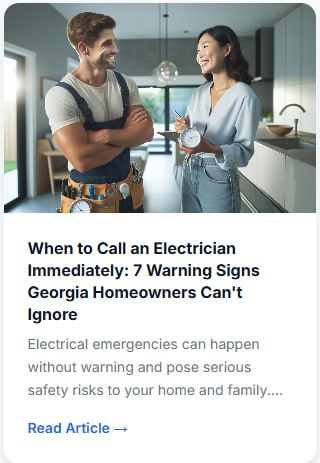

When to Call an Electrician Immediately
High-intent safety topic written for Georgia homeowners and emergency service demand.
An AI-powered content engine for home service businesses that turns market knowledge, services, FAQs, seasonal demand, and local customer questions into an ongoing publishing system.
High-intent safety topic written for Georgia homeowners and emergency service demand.
Built around customer symptoms, service area relevance, and conversion intent.
Connects housing age, safety education, and service request opportunities.
Flagged for pricing sensitivity before publication.
